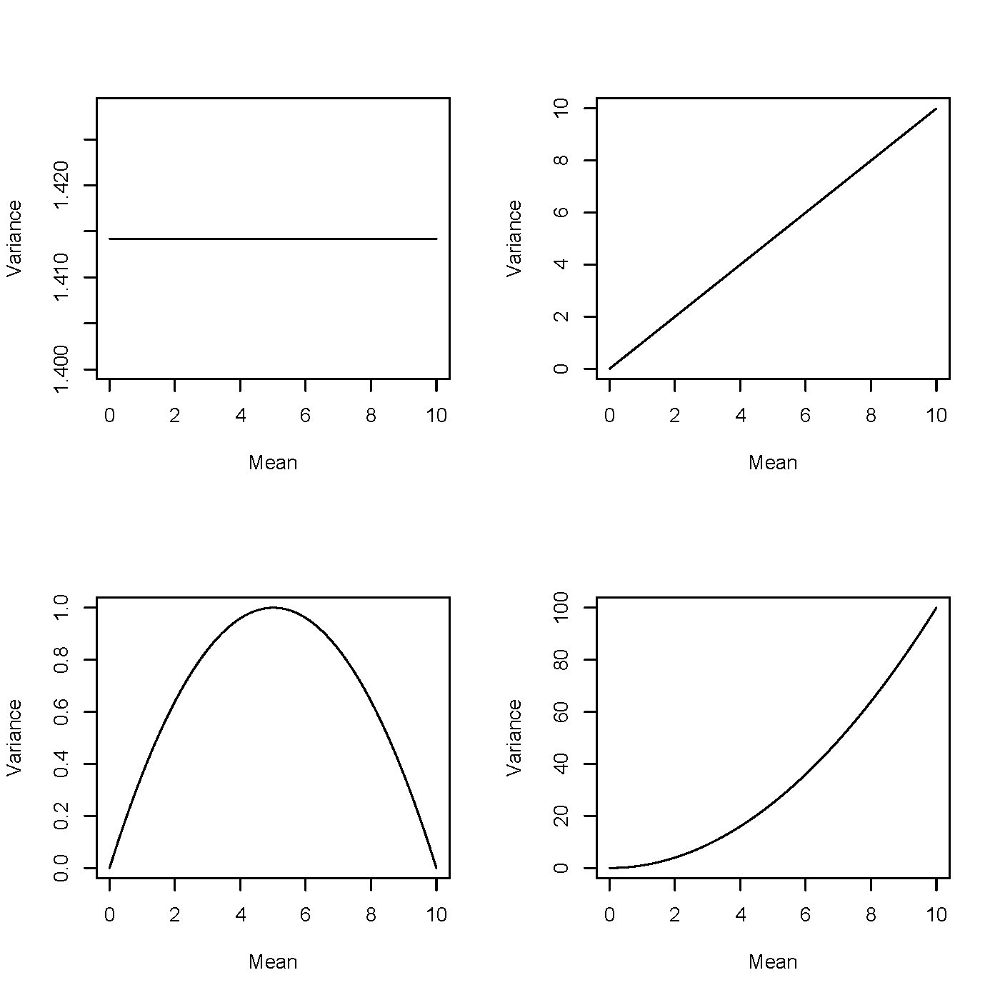
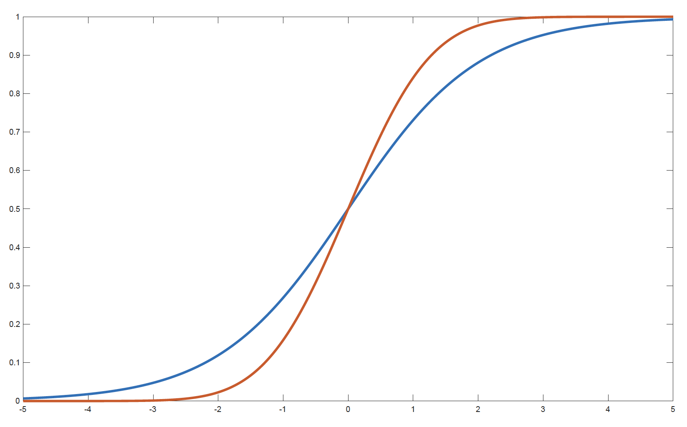
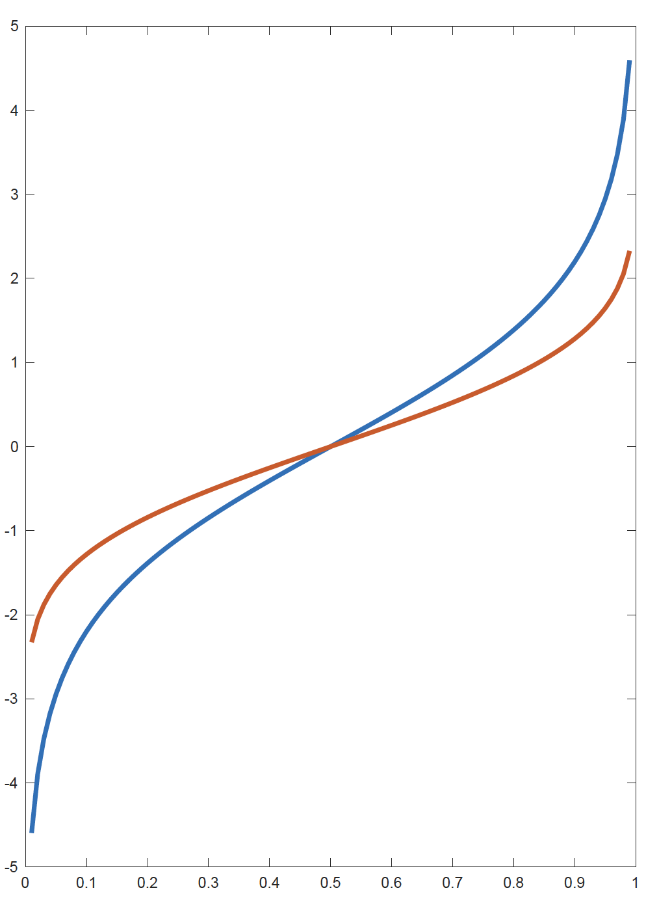
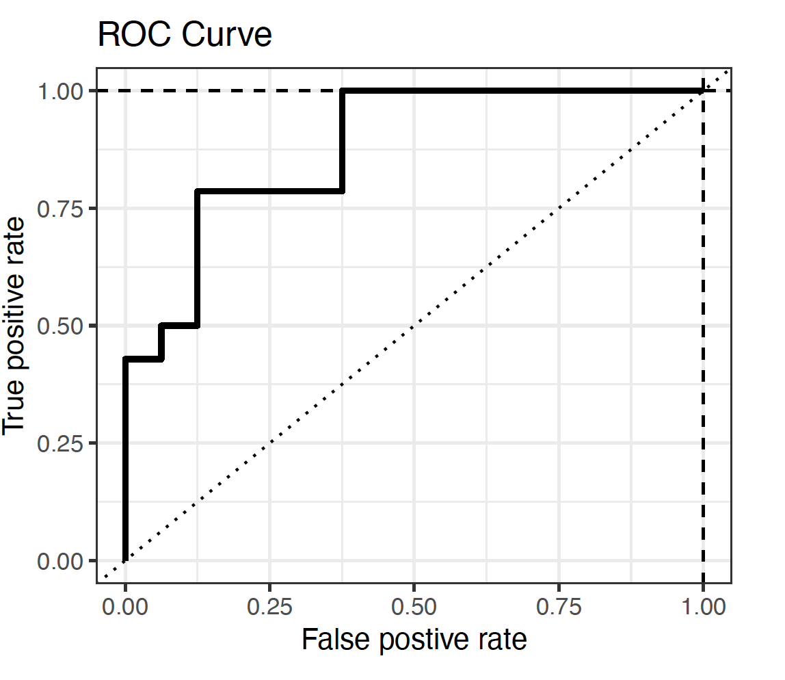
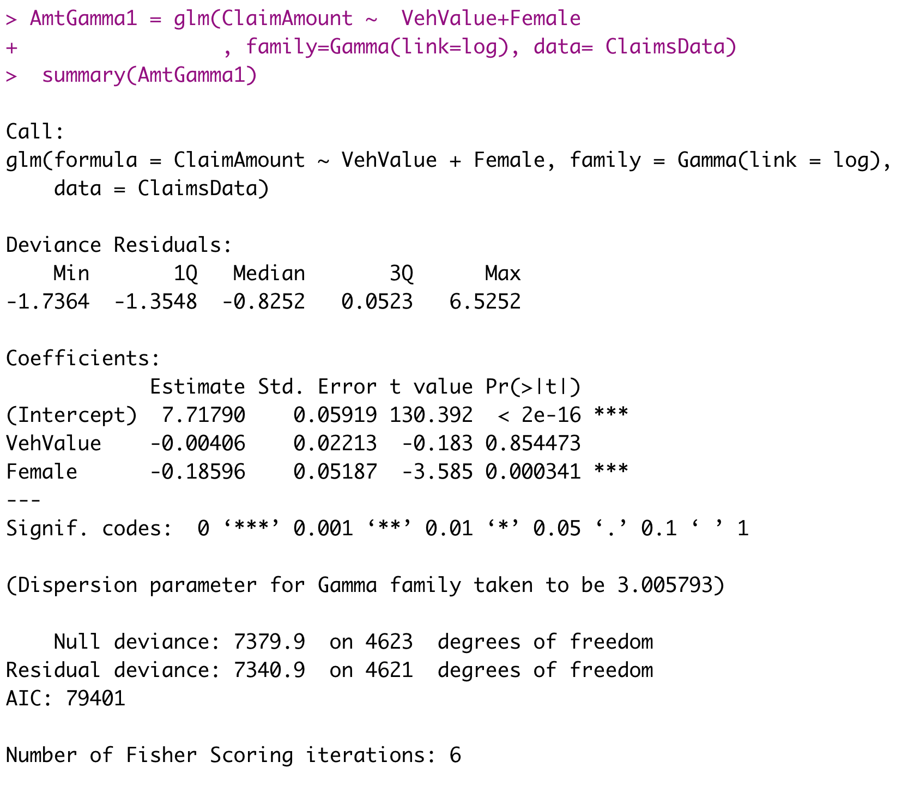

Lecture: GLM
Actuarial Data Science - Open Learning Resource
Recommended Reading
- Generalized Linear Models for Insurance Data: Review Chapter 5 (covered in ACTL 3162/5106)
- Generalized Linear Models for Insurance Data: Read Chapters 6, 7 (excluding Sections 7.7–7.9), and 8
Learning Objectives
GLMs are one of the core workhorses of actuarial modelling, especially in pricing and reserving. In this lecture, we revisit the GLM framework and connect it to the broader statistical learning ideas you have seen, so that you understand when and why a GLM is an appropriate choice, not just how to fit one in software.
Perform data analytics modelling using GLM for response variables of the following types:
- count data
- binary data
- continuous data
- a mixture of discrete and continuous data
Understand the specification of GLMs and their model assumptions.
Select and validate a GLM appropriately.
Compare GLMs with other modelling techniques.
Generalized Linear Models (Review from Prior Courses)
Linear Model
A Linear model assumes Y \mid X \sim \mathcal{N}(\mu(X), \sigma^2 I). And \mathbb{E}(Y \mid X) = \mu(X) = X^T \beta, where X = (1, x_1, x_2, \ldots, x_p)^T and \beta = (\beta_0, \beta_1, \ldots, \beta_p)^T.
- Normal errors
- Constant variance
- Additive linear relationship
Components of a Linear Model
The main components (that we are going to relax) are:
- Random component: the response variable Y \mid X is continuous and normally distributed with mean \mu = \mu(X) = \mathbb{E}(Y \mid X).
- Link: the relationship between the random component and the covariates X = (1, x_1, x_2, \ldots, x_p)^T \mu(X) = X^T \beta
- Model fitting and inference: least squares, maximum likelihood estimation, and weighted least squares
Insurance Applications
In insurance settings, most variables are non-normal in nature. Models used are often multiplicative, hence linear on the log scale.
- In general insurance, claim numbers (frequency) are typically Poisson, or Poisson with over-dispersion. These distributions are not symmetric, and their variance is proportional to the mean.
- In general insurance, claim amounts (severity) are right-skewed, often following distributions such as the Gamma.
- In mortality studies, the aim is to explain the number of deaths in terms of variables such as age, gender, and lifestyle.
- In health insurance, we may wish to explain the number of claims made by different individuals or groups of individuals in terms of explanatory variables such as age, gender and occupation.
How to Solve the Problem?
- Transformations on linear models (e.g., log-transformed response)?
- If using a log-transformed response, then the target variable must be non-negative and will be lognormally distributed.
- It does not solve all problems.
- If using a log-transformed response, then the target variable must be non-negative and will be lognormally distributed.
- GLMs provide more flexibility and cover a wider range of distributions.
Generalisation
A generalized linear model (GLM) generalises normal linear regression models in the following directions:
Random component: Y \sim \text{some exponential family distribution}
Link: between the random component and covariates: g(\mu(X)) = X^T \beta = \beta_0 + \beta_1 X_1 + \cdots + \beta_p X_p where g is the link function and \mu = \mathbb{E}(Y \mid X). The link function can be any monotonic function (allowing inversion): \mu(X) = g^{-1}(X^T \beta) = g^{-1}(\beta_0 + \beta_1 X_1 + \cdots + \beta_p X_p)
Model fitting and inferences: maximum likelihood estimation
- Newton-Raphson Method
- Fisher scoring Method
One-Parameter Canonical Exponential Family
Canonical exponential family for k = 1, y \in \mathbb{R}: f_\theta(y) = \exp\left(\frac{y\theta - b(\theta)}{\phi} + c(y, \phi)\right) for some known functions b(\cdot) and c(\cdot, \cdot).
If \phi is known, this is a one-parameter exponential family with \theta being the canonical parameter.
If \phi is unknown, this may or may not be a two-parameter exponential family. \phi is called the dispersion parameter.
In this class, we always assume that \phi is known.
Example: Normal Distribution
- Consider the following normal density function with known variance \sigma^2:
\begin{aligned} f_\theta(y) &= \frac{1}{\sigma\sqrt{2\pi}} \exp\left(-\frac{(y - \mu)^2}{2\sigma^2}\right) \\ &= \exp\left\{ \frac{y\mu - \frac{1}{2}\mu^2}{\sigma^2} - \frac{1}{2} \left( \frac{y^2}{\sigma^2} + \log(2\pi\sigma^2) \right) \right\} \end{aligned}
- Therefore \theta = \mu, \phi = \sigma^2, b(\theta) = \frac{\theta^2}{2}, and c(y, \phi) = -\frac{1}{2} \left( \frac{y^2}{\phi} + \log(2\pi \phi) \right).
Other distributions
The exponential family includes a rich class of distributions, such as normal, Poisson, binomial, Gamma, and inverse Gaussian distributions.
| Normal | Poisson | Bernoulli | |
|---|---|---|---|
| Notation | \mathcal{N}(\mu, \sigma^2) | \mathcal{P}(\mu) | \mathcal{B}(p) |
| Range of y | (-\infty, \infty) | \{0, 1, 2, \ldots\} | \{0, 1\} |
| \phi | \sigma^2 | 1 | 1 |
| b(\theta) | \dfrac{\theta^2}{2} | e^\theta | \log(1 + e^\theta) |
| c(y,\phi) | -\dfrac{1}{2}\left(\dfrac{y^2}{\phi} + \log(2\pi\phi)\right) | -\log(y!) | 0 |
How to Select the Response/Target Distribution?
We should choose the response distribution that is consistent with the characteristics of the response variable.
- Count response variables, such as the number of claims (frequency) and the number of deaths in mortality studies.
- Poisson distribution (mean = variance)
- Quasi-Poisson and Negative Binomial (variance > mean)
- Binary response variables, such as fraud detection, email spam detection, and whether a client is credible or not.
- Bernoulli distribution (binomial distribution with n=1)
- Positive continuous response variables, such as claim amounts (severity) and insurance coverage.
- Gamma and inverse Gaussian distributions
- A mixture of discrete and continuous response variables, such as aggregate loss in general insurance.
- Tweedie distribution
Mean and Variance
The mean \mathbb{E}(Y) and the variance \mathrm{Var}(Y) can be derived as follows:
\mathbb{E}(Y) = \mu = b'(\theta).
\mathrm{Var}(Y) = V(\mu)\,\phi = b''(\theta)\,\phi. V(\mu) is called the variance function.
Examples of Mean
- Note that \mu = b'(\theta), so the mean \mu depends on the canonical (location) parameter \theta, or equivalently \theta depends on \mu. Hence, we sometimes write \theta = \theta(\mu).
Normal N(\mu, \sigma^2): \theta = \mu, and hence \theta(\mu) = \mu.
Gamma(\alpha, \beta): \theta = -\beta/\alpha = -\frac{1}{\mu}, and hence \theta(\mu) = -\frac{1}{\mu}.
Inverse Gaussian(\alpha, \beta): \theta = -\frac{1}{2}\frac{\beta^2}{\alpha^2} = -\frac{1}{2\mu^2}, and hence \theta(\mu) = -\frac{1}{2\mu^2}.
Poisson(\mu): \theta = \log \mu, and hence \theta(\mu) = \log \mu.
Binomial(m, p): \theta = \log\!\left(\frac{p}{1-p}\right) = \log\!\left(\frac{\mu}{m-\mu}\right), and hence \theta(\mu) = \log\!\left(\frac{\mu}{m-\mu}\right).
Negative Binomial(r, p): \theta = \log(1-p) = \log\!\left(\frac{\mu p}{r}\right), and hence \theta(\mu) = \log(1-p) = \log\!\left(\frac{\mu p}{r}\right).
Example: Poisson Distribution
Consider a Poisson likelihood, f(y) = \frac{\mu^y}{y!} e^{-\mu} = \exp\!\left(y \log \mu - \mu - \log(y!)\right), Thus, \theta = \log \mu, \quad b(\theta) = \mu, \quad c(y, \phi) = -\log(y!), \phi = 1, \mu = e^\theta,
b(\theta) = e^\theta, b''(\theta) = e^\theta = \mu.
Variance Function
- The variance is sometimes expressed as \mathrm{Var}(Y) = \phi V(\mu), where V(\mu) = b''\!\left(\theta(\mu)\right) and is called the variance function.
Normal N(\mu, \sigma^2) with V(\mu) = 1
Gamma(\alpha, \beta) with V(\mu) = \mu^2
Inverse Gaussian(\alpha, \beta) with V(\mu) = \mu^3
Poisson(\mu) with V(\mu) = \mu
Binomial(m, p) with V(\mu) = \mu\left(1 - \mu/m\right)
Negative Binomial(r, p) with V(\mu) = \mu\left(1 + \mu/r\right)
Mean-variance relationship (1)

Link function
- \beta is the parameter of interest and needs to appear in the likelihood function to enable maximum likelihood estimation.
- A link function g relates the linear predictor X^T\beta to the mean parameter \mu: X^T\beta = g(\mu).
- The function g is required to be monotone increasing and differentiable: \mu = g^{-1}(X^T\beta).
Examples of Link Functions
- For linear regression, g(\cdot) is the identity.
- Poisson data. Suppose Y \mid X \sim \text{Poisson}(\mu(X)).
- \mu(X) > 0;
- \log(\mu(X)) = X^T\beta;
- In general, a link function for count data should map (0, +\infty) to \mathbb{R};
- The log link is a natural choice.
- Bernoulli/Binomial data.
- 0 < \mu < 1;
- g should map (0,1) to \mathbb{R};
- Three choices:
- logit: \log\!\left(\frac{\mu(X)}{1-\mu(X)}\right) = X^T\beta;
- probit: \Phi^{-1}(\mu(X)) = X^T\beta, where \Phi(\cdot) is the normal CDF;
- complementary log-log: \log\!\left(-\log(1-\mu(X))\right) = X^T\beta;
- The logit link is the natural choice.
Examples of Link Functions for Bernoulli Response (1)

- Blue: f_1(x) = \dfrac{e^x}{1 + e^x} (logit link)
- Red: f_2(x) = \Phi(x) (probit link, Gaussian CDF)
Examples of Link Functions for Bernoulli Response (2)

- Blue: g_1(x) = f_1^{-1}(x) = \log\!\left(\frac{x}{1-x}\right) (logit link)
- Red: g_2(x) = f_2^{-1}(x) = \Phi^{-1}(x) (probit link)
Canonical Link
- The function g that links the mean \mu to the canonical parameter \theta is called the canonical link: g(\mu) = \theta.
- Since \mu = b'(\theta), the canonical link is given by g(\mu) = (b')^{-1}(\mu).
- The canonical link function creates an identity link between \theta and the X^T\beta: g(\mu) = \theta = X^T\beta.
Example: The Bernoulli Distribution
- We can check that b(\theta) = \log(1 + e^\theta).
- Hence we solve b'(\theta) = \frac{e^\theta}{1 + e^\theta} = \mu, \theta = \log\!\left(\frac{\mu}{1-\mu}\right).
- The canonical link for the Bernoulli distribution is the logit link.
Other Examples of Canonical Links
| Distribution | b(\theta) | g(\mu) |
|---|---|---|
| Normal | \dfrac{\theta^2}{2} | \mu |
| Poisson | e^\theta | \log \mu |
| Bernoulli | \log(1 + e^\theta) | \log\!\left(\dfrac{\mu}{1-\mu}\right) |
| Gamma | -\log(-\theta) | -\dfrac{1}{\mu} |
How to Select the Link Function?
- Consistent with the range of the response data, for example
- for response variables with positive means, a log link can be appropriate for Poisson, gamma, and inverse Gaussian distributions;
- for binary response variables (only taking values of 0 or 1), the mean should be bounded between 0 and 1. Hence, a logit link is appropriate.
- Easy to interpret.
- Interpret the effects of the predictors on the mean of the response variable (i.e., interpret the coefficients).
- For example, the log link is easy to interpret, as it generates a multiplicative model for the mean of the response variable.
- Interpretability is an important advantage of GLMs.
How to Select the Link Function? (continued)
- Easy to compute.
- Canonical links simplify the likelihood function and make the optimisation procedure easier.
- This is a less important point compared to the first two, so canonical links are not always preferred.
GLM Model Structure
- Let (X_i, Y_i) \in \mathbb{R}^p \times \mathbb{R}, i = 1,2,\ldots,n, be independent random pairs such that the conditional distribution of Y_i given X_i has a density in the canonical exponential family: f_{\theta_i}(y_i) = \exp\left\{ \frac{y_i \theta_i - b(\theta_i)}{\phi} + c(y_i, \phi) \right\}.
- \mathbf{Y} = (Y_1, \ldots, Y_n)^T, \mathbf{X} = (X_1^T, \ldots, X_n^T)^T
- The mean \mu_i is related to the canonical parameter \theta_i via \mu_i = b'(\theta_i).
- The mean \mu_i depends on the covariates through a link function g: g(\mu_i) = X_i^T \beta.
\beta and \theta
Given a link function g, note the following relationship between \beta and \theta: \begin{aligned} \theta_i &= (b')^{-1}(\mu_i) \\ &= (b')^{-1}\big(g^{-1}(X_i^T \beta)\big) \equiv h(X_i^T \beta) \end{aligned}
where h is defined as h = (b')^{-1} \circ g^{-1} = (g \circ b')^{-1}.
Remark: if g is the canonical link function, then h is the identity.
Model Interpretation: Quantitative Predictors
The link function is closely related to the interpretation of coefficients.
- Log link: \ln(\mu) = X^T\beta = \beta_0 + \beta_1 X_1 + \cdots + \beta_p X_p
\mu = e^{X^T\beta} = e^{\beta_0 + \beta_1 X_1 + \cdots + \beta_p X_p}
= e^{\beta_0} \times e^{\beta_1 X_1} \times \cdots \times e^{\beta_p X_p}
- When there is a unit change in a predictor X_j (all others fixed), there is a multiplicative change (e^{\beta_j}) in the mean \mu, and the percentage change in \mu is (e^{\beta_j} - 1).
- When \beta_j is positive, e^{\beta_j} > 1 and \mu increases; when \beta_j is negative, e^{\beta_j} < 1 and \mu decreases.
- Logit link: \ln\!\left(\frac{\mu}{1-\mu}\right) = \ln(\text{odds}) = X^T\beta
- Similar interpretations.
Model Interpretation: Qualitative Predictors
For qualitative (categorical) predictors, the interpretation depends on the choice of the reference level.
Suppose a categorical variable has a reference category. Then:
- The intercept typically corresponds to the expected response for the reference category.
- The coefficient associated with another category measures the difference relative to the reference category.
- Under a log link, exponentiating the coefficient gives the multiplicative effect (i.e., multiplicative relativities) relative to the reference category.
- Under a logit link, exponentiating the coefficient gives the odds ratio relative to the reference category.
See the GLM lab materials for more detailed examples and interpretations.
Log-likelihood
The log-likelihood is given by \begin{aligned} \ell_n(\beta; \mathbf{Y}, \mathbf{X}) &= \sum_i \frac{Y_i \theta_i - b(\theta_i)}{\phi} \\ &= \sum_i \frac{Y_i\, h(X_i^T \beta) - b\!\left(h(X_i^T \beta)\right)}{\phi} \end{aligned} up to a constant term.
Note that when we use the canonical link function, we obtain the simpler expression \ell_n(\beta, \phi; \mathbf{Y}, \mathbf{X}) = \sum_i \frac{Y_i X_i^T \beta - b(X_i^T \beta)}{\phi}.
Maximum Likelihood Estimation (MLE)
- For linear models, the MLE and the ordinary least squares method are equivalent.
- For GLMs, we use MLE for parameter estimation.
- The log-likelihood \ell(\theta) is strictly concave when using the canonical link function and \phi > 0. As a consequence, the maximum likelihood estimator is unique.
- On the other hand, if another parameterisation is used, the likelihood function may not be strictly concave, leading to several local maxima. The following methods can be used for optimisation:
- Newton–Raphson method
- Fisher scoring method
- The coefficient estimates and the fitted mean response are given by: \hat{\mu}_i = g^{-1}\!\left(\hat{\beta}_0 + \hat{\beta}_1 x_{i1} + \cdots + \hat{\beta}_p x_{ip}\right).
Goodness-of-Fit Measures: Deviance
Deviance is a likelihood-based goodness-of-fit measure on the training set. It plays much the same role for GLMs as RSS does for ordinary linear models.
Null model: only the constant term is included.
Full model (saturated model): each fitted value is equal to the observation, so the saturated model fits perfectly. The full model is the case when \mu_i = y_i for all i = 1,2,\ldots,n, so that the log-likelihood in the full model gives \ell_{\text{full}} = \sum_{i=1}^{n} \left[ \frac{y_i \tilde{\theta}_i - b(\tilde{\theta}_i)}{\phi} + c(y_i, \phi) \right] where \tilde{\theta}_i are the canonical parameter values corresponding to \mu_i = y_i for all i = 1,2,\ldots,n.
We define the deviance of the chosen GLM (with log-likelihood \ell) as D \equiv 2(\ell_{\text{full}} - \ell).
Note: for a linear model with Gaussian errors, the deviance is just the RSS on the training set. The null deviance is 2(\ell_{\text{full}} - \ell_{\text{null}}).
Model Comparison
Consider two models:
- Model 1: q parameters, with deviance D_1;
- Model 2: p parameters (p > q), with deviance D_2. D_1 - D_2 \sim \chi^2(p - q).
Model 2 is a significant improvement over Model 1 (the more parsimonious model) if D_1 - D_2 exceeds the critical value from a \chi^2(p - q) distribution.
Since \Pr\!\left[ \chi^2(\nu) > 2\nu \right] \approx 5\%, the following rule of thumb can be used as an approximation: \text{Model 2 is preferred if } D_1 - D_2 > 2(p - q).
Example
Let Y_{ij} denote the number of claims for the jth male driver in group i (i=1,2,3, j=1,2,\cdots). Three models are fitted, with deviances as shown below:
| Model | Link function | Deviance |
|---|---|---|
| Model 1 | \log(\mu_{ij}) = \alpha_i,\ i = 1,2,3 | 60.40 |
| Model 2 | \log(\mu_{ij}) = \begin{cases} \alpha, & \text{if } i = 1,2 \\ \beta, & \text{if } i = 3 \end{cases} | 61.64 |
| Model 3 | \log(\mu_{ij}) = \alpha | 72.53 |
Determine whether or not
(a) model 2 is a significant improvement over model 3;
(b) model 1 is a significant improvement over model 2;
(c) model 1 is a significant improvement over model 3.
Exponential Distributions and Their Deviances
We drop the subscript i = 1,2,\ldots,n
Deviances are:
| Distribution | Deviance D(y, \hat{\mu}) |
|---|---|
| Normal | \sum (y - \hat{\mu})^2 |
| Poisson | 2 \sum \left[ y \log\!\left(\frac{y}{\hat{\mu}}\right) - (y - \hat{\mu}) \right] |
| Binomial | 2 \sum \left[ y \log\!\left(\frac{y}{\hat{\mu}}\right) + (m - y)\log\!\left(\frac{m - y}{m - \hat{\mu}}\right) \right] |
| Gamma | 2 \sum \left[ -\log\!\left(\frac{y}{\hat{\mu}}\right) + \frac{y - \hat{\mu}}{\hat{\mu}} \right] |
| Inverse Gaussian | \sum \frac{(y - \hat{\mu})^2}{\hat{\mu}^2 y} |
Deviance Residuals (1)
Residuals are a primary tool for assessing how well a model fits the data.
They can also help detect the form of the variance function and diagnose problem observations.
Response residuals (y_i - \hat{\mu}_i) are not very helpful, as they are not normally distributed and do not have constant variance.
Deviance Residuals (1) (continued)
- We consider the deviance residuals instead:
r_i^D = \text{sign}(y_i - \hat{\mu}_i)\sqrt{d_i}
- where d_i is the contribution of the ith observation to the deviance (drawing on the idea that deviance is akin to RSS).
- \text{sign}(y_i - \hat{\mu}_i) = 1 if y_i > \hat{\mu}_i, and \text{sign}(y_i - \hat{\mu}_i) = -1 if y_i < \hat{\mu}_i.
- For example, for a Poisson distribution, we have r_i^D = \text{sign}(y_i - \hat{\mu}_i)\sqrt{2\left[ y_i \log\!\left(\frac{y_i}{\hat{\mu}_i}\right) - (y_i - \hat{\mu}_i) \right]}.
- \sum_{i=1}^{n}(r_{i}^{D})^2=\sum_{i=1}^{n}d_i=D.
Deviance Residuals (2)
- Deviance residuals are approximately normally distributed for most response distributions.
- We can use a QQ plot of the standardised deviance residuals as a diagnostic tool.
- Deviance residuals should have no systematic patterns with respect to the predictors.
- Standardised deviance residuals have approximately constant variance.
AIC and BIC
Similar to the RSS of a linear model, deviance always decreases as the number of predictors increases.
AIC and BIC are penalised likelihood measures, which balance the goodness of fit on the training set and model complexity.
When a log-likelihood loss function is used, we have
- \text{AIC} = -2 \, \text{loglik} + 2d
- \text{BIC} = -2 \, \text{loglik} + (\log n)d
Procedure of Constructing a GLM
- Choose a response distribution f(y_i) and hence choose b(\theta).
- Choose a link g(\mu).
- Choose explanatory variables X in terms of which g(\mu) is to be modelled.
- Collect observations y_1,\cdots,y_n on the response y and corresponding values x_1,\cdots,x_n on the explanatory variables x.
- Fit the model by estimating \beta (and, if unknown, \phi).
- Given the estimate of \beta, generate predictions (or fitted values) of y for different settings of x, and examine how well the model fits. The estimated values of \beta can also be used to assess whether the explanatory variables are important in determining \mu.
Models for Count Responses
Count Response: Poisson Regression
- Y_i \sim \text{Poisson}(\lambda_i): \dfrac{\lambda_i^{y_i}}{y_i!} e^{-\lambda_i},
- g(\mu_i) = X_i^T \beta \quad \Rightarrow \quad \log(\lambda_i) = X_i^T \beta (canonical link = log link; log-linear model)
Model assumptions:
- Poisson Response: The response variable is a count per unit of time or space, described by a Poisson distribution.
- Independence: The observations must be independent of one another.
- Mean = Variance: By definition, the mean of a Poisson random variable is equal to its variance.
- Linearity: The log of the mean rate, \log(\lambda_i), must be a linear function of x.
Offsets
- If \mu is the mean of the count Y, then the occurrence rate \mu / n is of interest, and g\!\left(\frac{\mu}{n}\right) = X^T \beta.
- When g is the log function, we have \log\!\left(\frac{\mu}{n}\right) = X^T \beta \quad \Rightarrow \quad \log \mu = \log n + X^T \beta.
- The variable n is called the exposure, and \log n is called an offset.
- With the offset, Y has expected value directly proportional to exposure: \mu = n e^{X^T \beta}.
- Offsets are used to correct for group size or differing time periods of observation.
Overdispersion
- Overdispersion suggests that there is more variation in the response than the model implies.
How to solve it?
- Quasi-Poisson and quasi-likelihood: use an estimated dispersion factor to inflate standard errors: \sqrt{\hat{\phi}} \times \mathrm{SE}(\hat{\beta}). \hat{\phi} = \frac{\sum (\text{Pearson residuals})^2}{n - p}, where p is the number of model parameters. \hat{\phi} will be larger than 1 in the presence of overdispersion.
- Pearson residuals: r_i^{P} = \dfrac{y_i - \hat{\mu}_i}{\sqrt{V(\hat{\mu}_i)}}.
- Use a negative binomial regression model.
Negative Binomial Regression
If Y \sim \text{Poisson}(\lambda) and \lambda \sim \text{Gamma}\!\left(r, \frac{1-p}{p}\right), then Y \sim \text{NegBinom}(r, p).
- \mathbb{E}(Y) = \dfrac{pr}{1 - p} = \mu and \mathrm{Var}(Y) = \dfrac{pr}{(1 - p)^2} = \mu + \dfrac{\mu^2}{r}
- The overdispersion in this case is given by \dfrac{\mu^2}{r} (so smaller values of r indicate greater overdispersion).
Models for Binary Responses
Review: An Introduction to Statistical Learning (James et al. 2013), Sections 4.3 and 4.6.2
Binary Response: Logistic Regression
A binary target variable with the logit link is called a logistic regression model.
- Y_i \sim \text{Binomial}(1, \pi_i)
- g(\mu_i) = g(\pi_i) = \ln\!\left(\frac{\pi_i}{1-\pi_i}\right) = X_i^T \beta (canonical link = logit link)
- \pi_i = \dfrac{e^{X_i^T \beta}}{1 + e^{X_i^T \beta}}
- The logit link ensures predictions of \pi_i using X_i are in the interval (0,1) for all \beta and X_i.
- Other links
- probit link: \Phi^{-1}(\pi_i)
- complementary log-log (c-log-log) link: \log\!\left(-\log(1 - \pi_i)\right)
Performance Measures
- We need a cut-off to translate the predicted probabilities into classifications.
- Confusion matrix corresponding to the cut-off:
- \text{Sensitivity / Recall / True Positive Rate} = \dfrac{TP}{TP + FN}
- The ratio of TP to the total number of positive events.
- \text{Specificity} = \dfrac{TN}{TN + FP}
- The ratio of TN to the total number of negative events.
- \text{False Positive Rate} = \dfrac{FP}{TN + FP} = 1 - \text{Specificity}
- The confusion matrix can be computed on both the training and testing sets.

How to Choose the Correct Cut-off
- Depends on the business objective.
- For fraud detection, a low cut-off is preferred to avoid the high cost of undetected fraud.
- In other cases, if the profits and costs associated with correct and incorrect classifications are known, an optimal cut-off can be chosen to maximise overall profit or minimise overall cost.
ROC and AUC

- The Receiver Operating Characteristic (ROC) curve plots the True Positive Rate against the False Positive Rate.
- Each point on the ROC curve corresponds to a certain cut-off.
- A good model will have its ROC curve bend towards the top-left corner.
- AUC is the area under the ROC curve.
- The relative value of the AUC can be used for quantitative assessment of a classifier: the higher, the better.
- \text{AUC} = 1: perfect classifier.
- \text{AUC} = 0.5: random classifier. The ROC curve lies on the 45^\circ diagonal line.
Models for Continuous Responses
Continuous Response: Gaussian and Gamma Regression
- Gaussian response: linear regression
Positive right-skewed continuous response:
- Gamma response:
Y_i \sim \text{Gamma}(\mu_i, \nu)
- g(\mu_i) = \log(\mu_i) = X_i^T \beta
- The canonical link is the inverse function. Since parameters from a model with the inverse link are difficult to interpret, the log link is usually regarded as more useful.
Continuous Response: Gaussian and Gamma Regression (continued)
- Inverse Gaussian response:
Y_i \sim \text{IG}(\mu_i, \sigma^2)
- g(\mu_i) = \log(\mu_i) = X_i^T \beta (log link)
- The canonical link is g(\mu) = \mu^{-2}. However, the log link is usually preferred.
Models for a Mixture of Discrete and Continuous Responses
Tweedie Regression
Assume c is the number of claims on a policy and z_1, \ldots, z_c are the individual claim sizes. Then the total claim size is Y = \sum_{i=1}^{c} z_i = z_1 + \cdots + z_c.
- If c is Poisson and z_j are independent Gamma random variables, then Y has a Tweedie distribution.
- This distribution has a non-zero probability at Y = 0, equal to the Poisson probability of no claims. The rest of the distribution is similar to the Gamma distribution.
Tweedie Regression (continued)
The Tweedie distribution is a member of the exponential family and \mathrm{Var}(Y) = \phi \mu^p, where 1 < p < 2. Here, p is the power of the variance function.
Note:
- p = 0: Normal
- p = 1: Poisson
- p = 2: Gamma
- p = 3: Inverse Gaussian
- p = 0: Normal
Other Considerations
Interaction terms
In many applications, the effect of one predictor may depend on another predictor.
We can include interaction terms in a GLM: g(\mu) = \beta_0 + \beta_1 X_1 + \beta_2 X_2 + \beta_3 X_1 X_2
Interpretation:
- The effect of X_1 on the response depends on the value/level of X_2
- Interaction terms allow for non-additive effects
Types of interactions:
- Continuous × Continuous (captures non-linear joint effects)
- Categorical × Categorical (different group combinations)
- Continuous × Categorical (slope differs across groups)
- Continuous × Continuous (captures non-linear joint effects)
Basis Extensions
Extend linear predictors using basis functions: g(\mu) = \beta_0 + \beta_1 b_1(X) + \cdots + \beta_K b_K(X)
Here:
- b_k(X) are basis functions (transformations of X)
- e.g. X, X^2, \text{splines}, \log X
- b_k(X) are basis functions (transformations of X)
Basis functions can capture non-linear relationships and improve predictive performance
These ideas form the basis of more flexible models such as Generalised Additive Models (GAMs)
Penalized GLM (Shrinkage Techniques)
Penalised GLMs add a penalty to the likelihood: \text{Loss} = -\ell(\beta) + \lambda \cdot \text{Penalty}(\beta)
Common choices of penalties:
- Lasso
- Ridge
- Elastic Net
- Lasso
Refer to the topic of Modelling and Shrage Techniques discussed earlier
Using R
Using R: glm()
glm()functionglm(formula, family = familytype(link = linkfunction), data = )
| Family | Default (canonical) link | Other / preferred link(s) |
|---|---|---|
| binomial | (link = “logit”) | “probit”, “cloglog” |
| gaussian | (link = “identity”) | |
| gamma | (link = “inverse”) | “log” |
| inverse.gaussian | (link = “1/mu^2”) | “log” |
| poisson | (link = “log”) | |
| quasipoisson | (link = “log”) | |
| quasibinomial | (link = “logit”) |
Other Useful R Functions
library(statmod)andlibrary(tweedie)glm.nb()(from MASS): fit a Negative Binomial regressiontweedie.profile(): maximum likelihood estimation of the Tweedie index parameter pstep(): stepwise model selectionsummary()AIC()BIC()- etc.
Examples
Example 1: Question
You are working as an actuarial analyst for a general insurer. You are given a dataset with the following information:
- NumClaims: number of claims of a policyholder over a period of time
- Time: the number of years a policyholder is observed
- Age: age of a policyholder
- Gender: gender of a policyholder
- RiskCat: risk category to which a policyholder belongs
Example 1: Question (continued)
You are asked to examine the effects of various factors on the number of claims that a policyholder is observed over a period of time. Please specify: 1. the distribution of the target variable
2. the predictors
3. the link function
4. the offset (if any)
5. write down the key R command to fit such a GLM
Example 1: Solution
- Poisson distribution
- Age, Gender and RiskCat
- log link
- \log(\text{Time})
modPossion <- glm(NumClaims ~ Age + Gender + RiskCat, family=poisson, offet = log(Time))
Example 2: Question
We analyse 4624 claims from Australian automobile insurance to understand the factors that affect claim severity and to predict claim severity.
- ClaimAmount: the sum of claim payments
- VehValue: the vehicle value in thousands of Australian dollars
- Gender: the gender of the policyholder (Female = 1, Male = 0)
Example 2: Question (continued)

Example 2: Question (continued)
- Specify the distribution and the link function used in this model.
- Explain why they are selected for this example.
- Write down the mathematical form of the link function g(\mu) = X^T \beta for this model.
- Interpret the GLM coefficients related to VehValue and Female.
- Discuss how to perform diagnostic checking for this model.